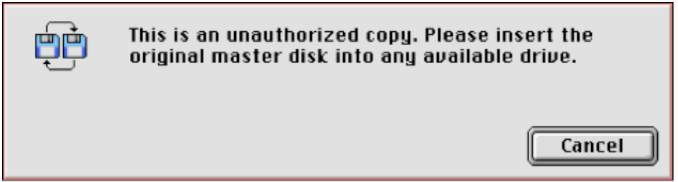
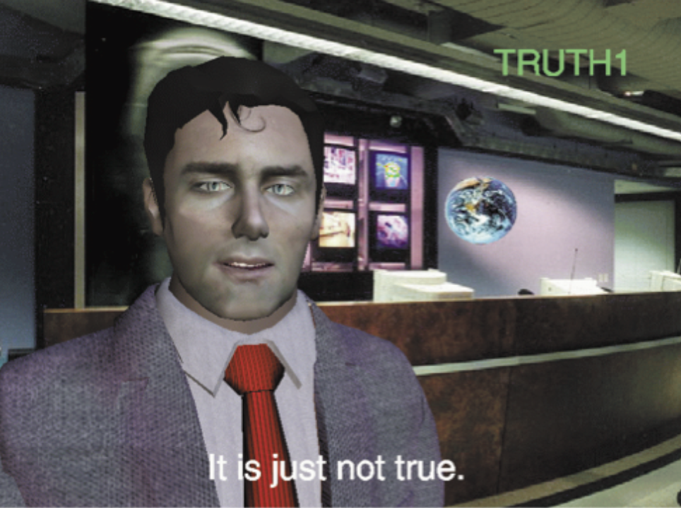

Hacking for the Sake of Digital Art Preservation
Founded under Heinrich Klotz (1935–1999). Directed by Peter Weibel from 1999 until his passing on 1 March 2023. Succeeded by British curator Alistair Hudson on 1 April 2023.
Digital artworks are fragile by nature — they depend on external tools and services that change, shut down, or disappear.
ZKM maintains artworks in their historical technological environment as long as possible — same computer model, same OS, same peripherals.
⚠ However: high fragility
Limits other institutions that lack same resources → ZKM produces updated version within newer technologies — as close to the original as possible.
"Lots Of Copies Keep Stuff Safe"
— LOCKSS, Stanford University Libraries
Bar Code Hotel by Perry Hoberman (1994) — and a copy-protection problem two decades old.
Perry Hoberman · 1994

Used a patch created by snapCASE in 1996 — an unauthorized corrective program that disables the floppy-check routine and replaces it with code that assumes a valid disk is present.
The patch was still available and functional more than 20 years later.
"Historically, piracy has helped guarantee the survival of important works of literature and art."
— Kari Kraus, iConference 2008
Introduced by Kari Kraus: “preservation that is amateur rather than professional; distributed rather than centralized; and unauthorized rather than authorized.”
Remote Control by Shane Cooper (1999) — a standalone license tied to a machine, and a company that no longer exists.
An online interactive installation (1999) featuring a computer-animated news anchorman that recombines online news into conditional/negative linguistic forms — questioning the meaning of messages.

A script that emulates the original machine's lmhostid before Alive! checks it on boot — making the software believe it's running on the licensed machine.
Built on successive contributions from programmers between 1996–2009.
Open-source and adaptable for any standalone-licensed software on SGI O2 and Indigo2.
Cornelia Sollfrank's net.art generator — when Google changed its API terms and killed a 20-year-old artwork.
A PERL program (1997) that collects and recombines internet material to create new websites and images — five versions, seven programmers over two decades.
Developed by Winnie Soon & Gerrit Bolez: automatically rotates Google ID keys after the 100-query limit is reached.
Users donate their API key to keep the artwork alive — turning preservation into a collective act.
Mutations become "fuel for generating new political artistic production."
— Cornelia Sollfrank
A dedicated communication hub bridging internet pirate resources and museum research — patches, blueprints, discussions — in the Copyleft spirit.
Amateur communities safeguarded cultural heritage for 20+ years — without institutional mandate or budget. Museums must acknowledge and collaborate with them.
Commercial companies are centralized. Museums and hacker communities must be as distributed in response.
Social hacking solutions may help to think about power relationships between corporations and users.
Heiss, Stricot & Vlaminck · ZKM Center for Art and Media · iPRES 2018